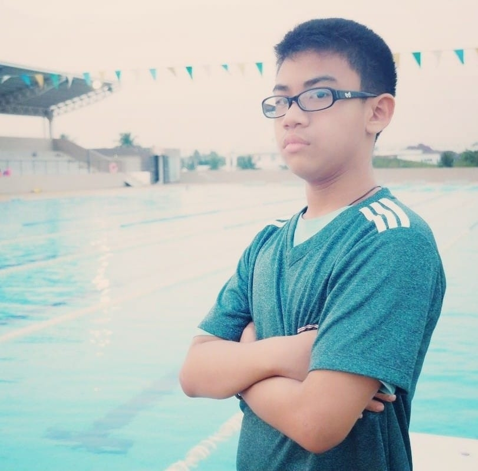

|
ประวัติส่วนตัว-ชื่อ ด.ช.ธนกฤต จอมหงษ์ กำลังศึกษาที่ โรงเรียนศึกษานารีวิทยา-เกิดวันที่27 มกราคม พ.ศ.2549-อายุ14ปี-เป็นนักกีฬาว่ายนํ้า-ชอบเขียนโปรแกรม -อยากเข้าคณะวิศวะคอมฯ-Email>Thanakrit.0127@gmail.com-เบอร์ติดต่อ 092-275-1575-facebook>Thanakrit Jomhong | |||||
จัดทำโดย | ||||||